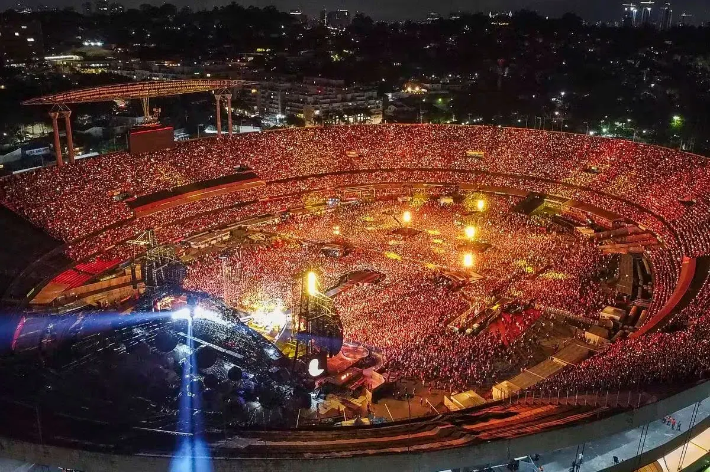

O Estádio Cícero Pompeu de Toledo, conhecido como Estádio do Morumbi ou, por direitos de nome, como MorumBIS, é um estádio de futebol localizado na Praça Roberto Gomes Pedrosa, N.º1, cidade de São Paulo. É a sede oficial do time brasileiro São Paulo Futebol Clube, e já recebeu a Seleção Brasileira em várias ocasiões.
O estádio foi projetado para acomodar 150 mil espectadores, tendo sido sua capacidade reduzida, devido a diversas reformas e à instalação de camarotes, para 77.011 e, por questões de brigas em estádios, a Confederação Brasileira de Futebol (CBF) diminuiu novamente a capacidade para 72.039. Atualmente, o Morumbis é o terceiro maior estádio do Brasil, sendo também o maior estádio do estado de São Paulo e o maior estádio particular do País.
Além de ser um estádio de futebol, o Estádio do Morumbi também é conhecido por sediar diversos shows e eventos musicais ao longo do ano. Com uma acústica incrível e uma infraestrutura moderna, o estádio recebe artistas nacionais e internacionais, proporcionando momentos inesquecíveis aos fãs da música.
Para garantir o conforto dos visitantes, o Estádio do Morumbi oferece uma série de serviços e comodidades. Há amplas áreas de estacionamento ao redor do estádio, facilitando o acesso dos torcedores e espectadores. Além disso, o local conta com lanchonetes e bares, onde é possível encontrar uma variedade de opções gastronômicas para saborear antes, durante ou depois do evento.
Abaixo algumas das bandas que já passaram pelo MorumBIS:
Se você está planejando assistir a um jogo de futebol no Estádio do Morumbi, é importante ficar atento à programação e adquirir seus ingressos com antecedência. Os jogos do São Paulo Futebol Clube costumam atrair uma grande quantidade de torcedores, então é recomendado planejar sua visita com antecedência para garantir seu lugar nas arquibancadas.